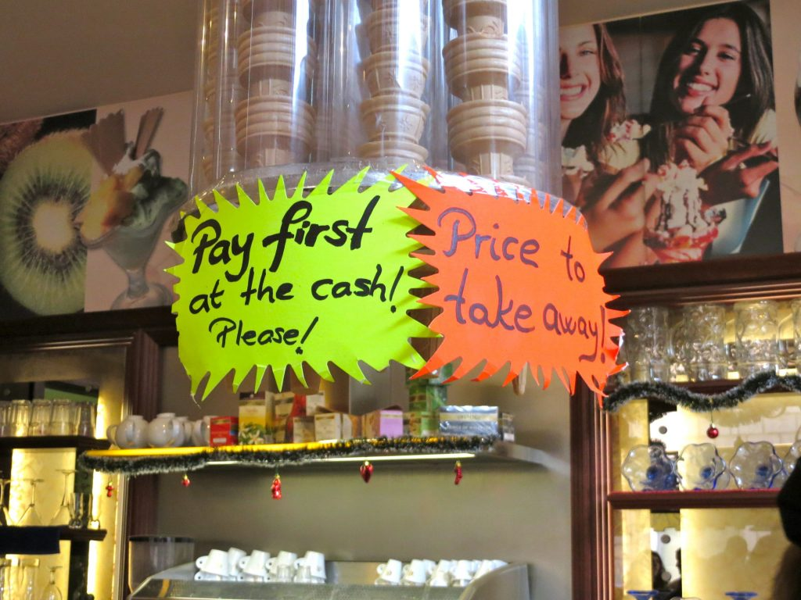
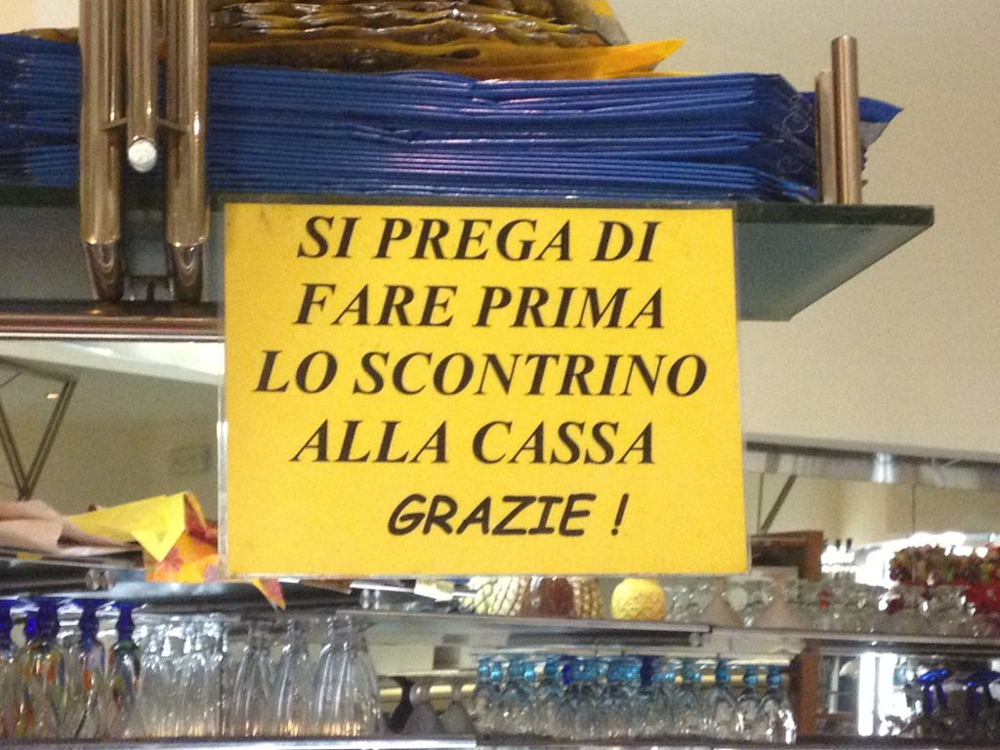

A "pay first " sign in a bar in Rome
In many Italian bars, you need to pay before consuming your coffee, drink, or whatever you order. This is to avoid people leaving the bar without paying. What you need to do is to pay at the cash register, take the receipt and give it to the bartender. The bartender will tear or stamp the receipt and then he/she will give you what you ordered. Before leaving, remember to take the receipt with you. You must do it by law. This law has the goal to protect the State from being cheating out of the tax. Same message, but in Italian:
"Please, get the receipt at the cash register first. Thank you"
{This is an excerpt from chapter 4 “Gelaterie and Coffee Houses” of the eBook “Italy from the Inside. A native Italian reveals the secrets of traveling in Italy”. Buy our eBook on Amazon and leave us a review! If it’s good, you’ll make us happy, if it’s bad, you’ll make us improve. Thank you either way!}